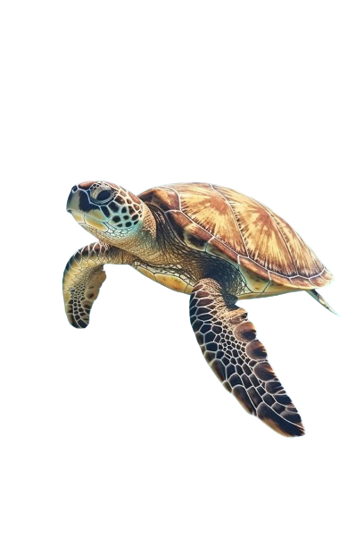
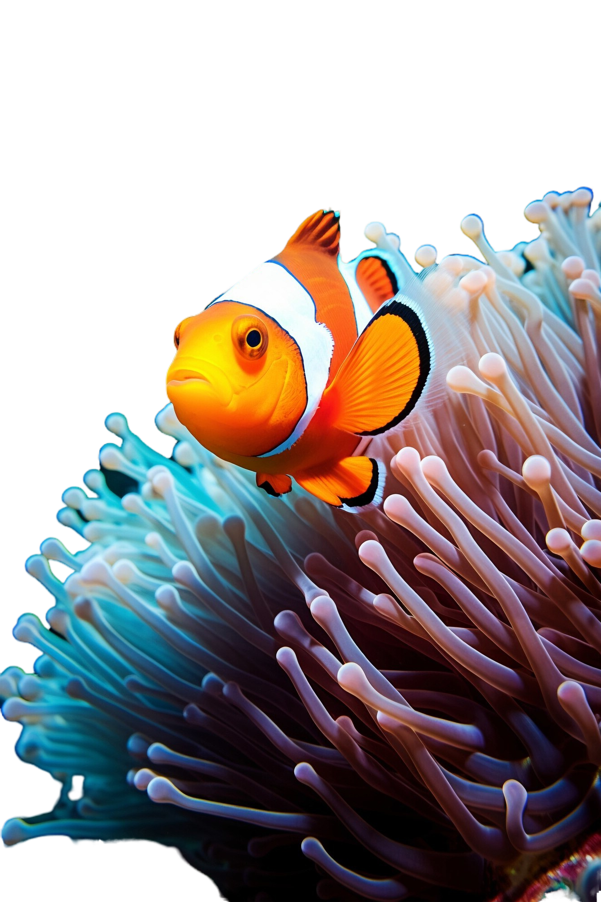

Nossa ideia
A preservação dos ecossistemas marinhos é crucial para a saúde do nosso planeta, e os corais desempenham um papel vital nesse equilíbrio. Pensando nisso, foi desenvolvido um dispositivo inovador destinado a monitorar a saúde dos corais e das praias. Este equipamento avançado mede com precisão o pH, o volume da água e a temperatura, proporcionando dados essenciais para a conservação desses ambientes.
Como funciona
Nosso dispositivo possibilita o acompanhamento da temperatura, nível de ph, e altura das águas em que está instalado. Através de sua estrutura principal que possui os medidores de ph, temperatura e pressão(possibilitando assim saber o nivel das águas) que conseguem capturar essas informações e nos fornece-las através de um chip M2M que flutua na superfície e transmite as informações para serem analisadas, tornando mais fácil saber como está a vida marinha do local. Possuindo uma bateria de lítio ligada há um painel solar junto ao chip na superfície, fazendo o dispositivo ser autosuficiente.
Sua importância
A importância de um dispositivo que monitora a saúde dos mares e dos corais é fundamental para a preservação dos ecossistemas marinhos e para a mitigação dos impactos ambientais. Os oceanos cobrem mais de 70% da superfície da Terra e abrigam uma vasta biodiversidade, desempenhando um papel crucial na regulação do clima, na produção de oxigênio e na sustentação de inúmeras espécies, incluindo a humana. Além disso, o monitoramento contínuo ajuda a compreender melhor os impactos das mudanças climáticas e das atividades humanas nos oceanos, facilitando a implementação de políticas de conservação e práticas sustentáveis.
